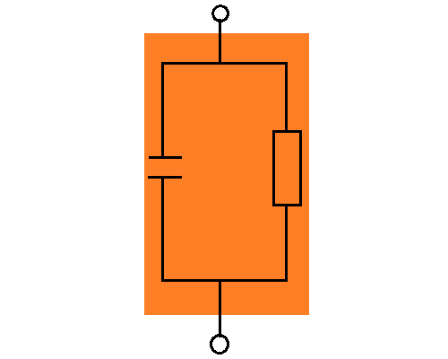
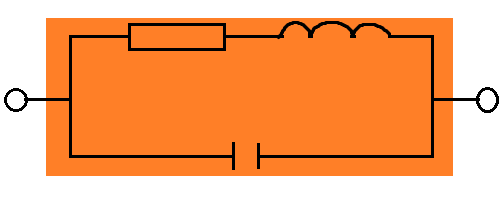
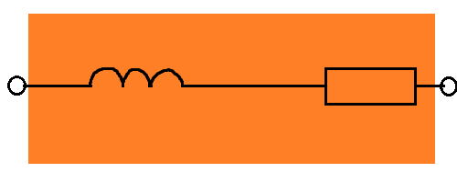
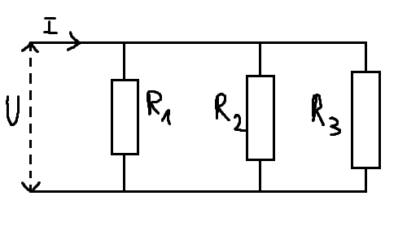

Dwa rezystory połącznone równolegle stanowią
tzw.
dzielnik prądu
Z zalezności wynika, że:
Prądy płynące przez rezystory
połączone równolegle rozpływają się
odwrotnie proporcjonalnie do
wartości ich resytancji
\[\frac{I_1}{I_2} = \frac{G_1}{G_2}
= \frac{R_2}{R_1}\]
Prądy płynące przez rezystory
połączone równolegle mają się tak do
prądu całkowitego jak ich
konduktancje do konduktancji
zastępczej
Prąd w obwodzie nierozgałęzionym jest ilorazem sumy
algebraicznej napięć źródłowych i sumy rezystancji w
obwodzie. \[I=\frac{\sum(E)}{\sum R}\]
Napięcie źródłowe \(E\) bierzemy przy tym ze znakiem
plus, jeżeli jego zwrot jest zgodny z przyjętym
zwrotem prądu, a ze znakiem minus, jeżeli jego zwrot
jest przeciwny do zwrotu prądu.
Rezystancje bierzemy zawsze ze znakiem plus.
Analiza obowdu nierozgałęzionego
Strzałkujemy
dowolnie prąd,
który jest jednakowy we wszystkich
elementach
Przeciwnie do prądu
strzałkujemy napięcia na rezystorach.
Układamy równanie wg
napięciowego prawa Kircholffa. \[E_1-U_1-U_2-U_3-E_2-U_4=0\]
Napięcia na rezystorach wyrażamy za pomocą
prawa Ohma.
\[E_1-R_1I-R_2I-R_3I-E_2-R_4I=0\]
Z otrzymanego równania
wyznaczamy prąd.
\[I(R_1+R_2+R_3+R_4)=E_1-E_2\]
\[I=\frac{E_1-E_2}{R_1+R_2+R_3+R_4}\]
W razie potrzeby obliczamy napięcia i inne
wielkości.
Obwód nierozgałęziony
Obwód nierozgałęziony zawiera tylko jedną
gałąź, jedno oczko i żadnych węzłów.
Analiza obwodów nierozgałęzionych jest
szczególnie łatwa, gdyż do wyznaczenia mamy
tylko jeden prąd.
II prawo Kircholffa - cd.
Zapisując równanie według druiegi prawa Kircholffa,
korzystamy często od razu z prawa Ohma, aby wyrazić
napięcie na rezystorze przez iloczyn jego
rezystancji i prądu. \[E_1 - R_2I_2 + R_3I_3 +
R_4I_3 - E_2 - R_1I_1 = 0\]
II prawo Kircholffa (napięciowe)
Suma algebraiczna wszystkich napięć w oczku
jest równa 0 \[\sum(U,E)=0\]
Przy sumowaniu napięć przymujemy pewien
kierunek obiegu oczka i napięcia
zastrzałkowane zgodnie z tym kierunkiem
bierzemy ze znakiem plus, a napięcia
zastrzałkowane przeciwnie bierzemy ze
znakiem minus.
Twierdzenie o obwodzie zamkniętym
Twierdzenie o obwodzie zamkniętym jest wynikiem
zasady zachowania energii, a
twierdzenie o punkcie rozgałęzienia
wynika z
zasady zachowania ładunku.
Przy stosowaniu praw Kircholffa zakładamy jakiś kierunek
prądu i jego natężenie w każdej gałęzi. Spadek napięcia
pojawia sie gdy "przechodzimy" przez opornik w kierunku
zgodnym z przyjętym kierunkiem prądu, a przyrost
napięcia gdzy przechodzimy przez źródło SEM w kierunku
od "-" do "+". Jeżeli w wyniku obliczeń otrzymamy ujemne
natężenie prądu to znaczy, że rzeczywisty kierunek padu
jest przciwny do przyjętego.
"W zamkniętym obwodzie suma spadków napięć na
oporach jest równa jesy sumie sił
elektromotorycznych występujących w tym obwodzie."
II prawo Kircholffa
Przy czym obwód ten może być elementem większej sieci.
Wówczas nosi on nazwę oczka sieci. Prawo to zapisane
równaniem na postać
\[\sum_{i}U_i=\sum_{i}\varepsilon_i\] gdzie:
\(\varepsilon_i\) - SEM i-tego źródła napięcia
\(U_i\) - spadek napięcia na i-tym elemencie oczka.
Dla oporów omowych: \[U_i=I_iR_i\] gdzie \(I_i\) jest
natężeniem prądu płynącego przez opornik o oporze \(R_i\)
Zarówno spadki napięcia jak i siły elektromotoryczne mogą
przybierać wartości ujemne i dodatnie. Ich znak ustala się
według następujących reguł:
ustala się kierunek obiegu obwodu (np. zgodnie z
ruchem wskazówek zegara)
gdy kierunek prądu płynącego przez element obwodu
jest zgodny z wyznaczonym kierunkiem obiegu, to
spadek napięcia jest dodatni (w przypadku
niezgodności - ujemny)
gdy SEM jest spolaryzowane zgodnie z kierunkiem
obiegu, jej wartość jest dodatnia
"Dla węzła obwodu elektrycznego suma algebraiczna
natężeń prądów wpływających i wypływających jest
równa zeru."
Lub:
"Suma natężeń prądów wpływających do węzła jest
równa sumie natężeń prądów wypływających z tego
węzła."
I prawo Kircholffa
Dla rysunku:
I prawo Kircholffa można zapisać w postaci:
\[I_1+I_2+I_3-I_4-I_5=0\] przyjmując konwencję, że prądy
wpływające do węzła są dodatnie, zaś wypływające ujemne
i traktując je jak wielkości algebraiczne lub w postaci:
\[I_1+I_2+I_3=I_4+I_5\] biorąc pod uwagę tylko wartości
prądów i zapisując prądy wpływające po jednej stronie, a
prądy wypływające po drugiej stronie równania.
W ogólnym przypadku wielu prądów prawo ma postać:
\[\sum_{n=1,2,...}I_n=0\] przy czym nalezy pamiętać, że
prądem wypływającym przypisuje się ujemną wartość
natężenia.
Zamiana rzeczywistego źródła napięcia
Rzeczywiste źródło napięcia o SEM równej
\(E\) i rezystancji wewnętrznej \(R_w\)
można zastąpić rzeczywistym źródłem prądu
Prąd źródłowy oblicza się ze wzoru
\[J=\frac{E}{R_w}\]
Rezystancja źródła pozostaje bez zmian, ale
jest teraz połączona równolegle.
Rozpływ prądów i rozkład napięć w pozostałej
części obwodu nie ulegnie przy tym zmianie.
Charakterystyki rzeczywistych źródeł
Prównajmy charakterystyki prądowo-napięciowe
rzeczywistych źródeł napięcia i prądu.
Obydwie mają taki sam kształt, co oznacza,
że przy odpowiednim doborze parametrów jedno
źródło mozna zastąpić drugim, co może
ułatwić obliczenia.
Z rysunku wynika, że aby obydwie
charakterystyki były identyczne wystarczy
spełnić warunek: \[E=JR_w\]
Rzeczywiste źródło
Rzeczywiste źródło prądu charakteryzuje
się tym, że wraz ze wzrostem napięcia na
jego zaciskach prąd zmniejsza się.
Można to uwzględnić za pomocą rezystora
\(R_w\), którego wartość interpretuje się
jako rezystancję wewnętrzną źródła.
Rezystancja wewnętrzna źródła prądowego
powinna być jak największa.
Zwróćmy uwagę na sposób podłączenia
rezystora (równolegle, a nie szeregowo).
Fikcyjna struktura w postaci idealnego
źródła i równolegle podłączonego rezystora
ułatwia obliczenia.
\[I=J-\frac{U}{R_w}\]
Idelane źródło prądu stałego
Idealne źródło prądu stałego
to element aktywny, przez który płynie prąd
\(I=const\) niezależnie od napięcia
panującego na jego zaciskach.
Prąd źródłowy często oznacza się \(J\).
Prąd na schematach elektrycznych źródła
napięcia oznacza się zazwyczaj jednym z
dwóch symboli.
Przykłady rzeczywistych źródeł napięcia
Wszelkiego rodzaju baterie chemiczne
Akumulatory
Prądnice prądu stałego
Ogniwa fotowoltaniczne
Zasilacze sieciowe z prostownikiem(np. ładowarki do
telefonu)
Termopary(połączenia dwóch różnych metali)
Istotą działania źródła napięcia jest to, że pewne siły(np.
chemiczne w bateriach, magnetyczne w prądnicach) wymuszją
różnicę potencjałów pomiędzy zaciskami źródła.
Rzeczywiste źródła napięcia
Rzeczywiste źródło napięcia
charakteryzuje się tym, że ze wzrostem prądu
napięcie na jego zaciskach zmniejsza się.
Można to uwzględnić za pomocą rezystora
\(R_w\), którego wartość interpretuje się
jako
rezystancję wewnętrzna
źródła.
Rezystancja wewnętrzna źródła napięciowego
powinna być jak najmniejsza.
W rzeczywistości wewnątrz rzeczywistego
źródła nie ma oddzielnie idealnego źródła i
rezystancji, lecz SEM i \(E\) i rezystancja
\(R_w\) rozłożone są w całym obszarze
źródła.
Fikcyjne rozdzielenie SEM i rezystancji
wewnętrznej jest wygodne w obliczeniach.
Idealne źródło napięcia stałego
Idealne źródło napięcia stałego
to element aktywny, na zaciskach, którego
panuje napięcie \(U = const\) niezależne od
płynącego prądu
Napięcie źródłe nazywa się
siłą elektromotoryczną(SEM) i często oznacza się \(E\) lub
\(\varepsilon_w\).
Na schematach elektrycznych źródła napięcia
oznacza się jednym z trzech symboli.
Obwody pasywne a aktywne
W sieci aktywnej występuje przynajmniej jeden element
aktywnby. Sieci zbudowane wyłącznie z elementów
pasywnych nazywamy paswnymi. Obwód statyczny, nazywamy
też stratnym lub rezystancyjnymi, tworzą tylko oporniki.
Jeżeli obwód zawiera przynajmniej jeden element \(L\)
lub \(C\), który magazynuje energię, to jest in nazywany
dynamicznym, niezaleznie od obecności \(R\). Obwód
dynamiczny jest bezstratny, gdy nie zawiera rezystancji
\(R\).
Właściwości obwodów RLC
Powyższe klasyfikacje można podsumować stwierdzeniem, że
wszystkie układy złożone tylko z elemtnów \(R,L,C\) są
pasywne, liniowe, odwracalne, niezmienne w czasie,
skupione i bilateralne. Dla uproszczenia są one zwykle
określane mianem systemów liniowych. Tego typu sieci
oraz obwody aktywne, które powstają z dołączenia źródeł
prądu i napięcia do elementów pasywnych, stanowią
zasadniczy przedmiot naszych rozwiązań.
Obwód elektryczny
Najprostszy obwód elektryczny to obwód, który jest
obwodem nierozgałęzionym. Składa się on z jednego
elementu źródłowego, którym może być ogniwo oraz jednego
elementu odbiorczego, którym może być rezystor, żarówka
lub inny element. Elementy te nalezy ze sobą połączyć w
taki sposób aby był możliwy przepływ prądu
elektrycznego.
Przy połączeniu tych elementów stworzone zostały warunki
umożliwiające przepływ prądu. Obwód nazywane będziemy
obwodem nierozgałęzionym, ponieważ w tym obwodzie
występuje tylko jeden prąd elektryczny taki sam w obu
elementach.
Schemat najprostszego obwodu elektrycznego
nierozgałęzionego
Schemat obwodu elektrycznego rozgałęzionego o
dwóch węzłach i trzech gałęziach
Topologia i geometria obwodu
W teorii obwodów elektrycznych topologia układu
charakteryzuje sposób połączenia jego obwodu jest
niezbędne do zrozumienia jego działania, więc stanowi
podstawowy etap wszystkich metod analizy. Topologię
obwodu charakteryzują węzły, gałęzie i oczka.
Gałąź obwodu jest tworzona przez jeden lub kilka
elementów połączonych ze sobą w określony sposób.
Węzłem obwodu jest zacisk będący końcówką gałęzi.
Gałąź obwodu tworzą elementy ograniczone dwoma
węzłami.
Oczko obwodu to zbiór gałęzi połączonych ze sobą i
tworzących drogę zamkniętą dla prądu elektrycznego.
Element jest częścią składową obwodu niepodzielną
pod względem funkcjonalnym bez utraty swych cech
Charakterystycznych.
Klasyfikacja elemetów elektronicznych
popsute zdjęcie.
Dwójniki i wielobieguniki
Element mający dwa zaciski nazywamy
dwójnikiem(np. rezystor,
cewka, bateria).
Element mający więcej zacisków nazywamy
wielobiegunikiem(np.
tranzystor jest trójnikiem, gdyż ma trzy zaciski).
Elementy odrwacalne i nieodwracalne
Element jest odwracalny,
jeżeli ma takie same właściwości niezależnie od
biegunowości przyłożonego napięcia(np. rezystor).
Element jest nieodwracalny,
jeżeli jego właściwości zależą od biegunowości
przyłożonego napięcia(np. dioda).
Najpierw zajmiemy się elementami omówimy w dalszej
kolejności.
Dwójniki i wielobieguniki (RLC)
Elementy o stałych, niezmiennych względem czasu
parametrach(np. R, L, C) są nazywane niezmiennymi w
czasie. W przeciwnym razie okresla się je mianem
elementów zmiennych w czasie.
Element bilateralny(np. R, L, C) dopuszcza przepływ
energii w obydwu kierunkach. W elemencie uniteralnym(np.
tranzystorze i diodzie półprzewodnikowej) energia może
przepływać tylko w jednym kierunku.
Elementy z dwoma zaciskami noszą nazwę jednoportowych.
Należą do nich \(R, L, C\), oraz diody. Elementy o
czterech zaciskach(lub trzech, jeżeli jeden z zacisków
można traktować jako dwa zwarte) są nazywane elementami
dwuportowymi. Przykładami elementów dwuportowych są:
transformatorym żyratory(przyrządy czterokońcówkowe) i
tranzystory(przyrządy trzykońcówkowe). Elementy, które
posiadają więcej niż dwa zaciski, są ogólnie okreslane
mianem wieloportowych.
Element liniowy
Sposób działania elementu liniowego nie zalezy od
natężenia prądu płynącego przezeń ani od napięcia na
jego zaciskach. Związek między prądem i napięciem(w
przypadku R) lub jedną z tych wielkości, a szybkością
zmian drugiej(w przypadku L i C) jest
propoporcjonalnością prostą, co zilustrowaną na rys.
Przykładami elementów liniowych są idealne R, L i C.
Element nieliniowy charakteryzuje się tym, że jego
oddziaływanie na obwód zalezy od napięcia na nim lub od
napięcia płynącego przezeń prądu. W przypadku takiego
elementu związki między napięciem a prądem nie można
opisać linią prostą. Prztkładami elementówq nieliniowych
sa m.in.: rezystor drutowy, żarówka elektryczna, cewka z
rdzeniem ferromagnetycznym oraz kondensator z
ferrodielektrykiem.
dużo wykresów.
Połączenia elektryczne
Połączenia między elementami wykonuje się za pomocą
przewodów elektrycznych poprzez zamocowanie jednego
końca przewodu do jednego z zacisków pierwszego
elementu, a drugiego końca przewodu do jednego z
zacisków drugiego elementu.
Idealny przewód jest elementem
bezrezystancyjnym \(R=0\).
Rzeczywiste przewody mają pewną(raczej niewielką)
rezystancję.
Przewody elektryczne wykonuje się z nardzo dobrych
przewodników - typowo jest to miedź.
W teorii obwodów połaczenia między elementami
traktuje się zawsze jako idealne \(R=0\), chyba że
wyraźnie zaznaczono inaczej.
Elementy, przyrządy i komponenty
Podstawową jednostką obowdu elektrycznego jest element.
Element może dostarczać energię do obwodu(tak jak źródła
napięcia i prądu) lub ją z niego pobierać(tak jak
rezystory \(R\), kondesatory \(C\) i cewki \(L\)).
Istnieją pewne elementy(takie jak diody, tranzystory,
wzmacniacze operacyjne i transformatory), które ze
względu na bardziej skomplikowane działanie są często
nazywane przyrządami. Zarówno elementy, jak i przyrządy
są określane mianem komponentów.
Elementy nazywamy pasywnymi lub biernym, gdy rozprasza
on energię elektryczną, która jest dostarczane do niego
z pozostałej części obwodu, jak \(R\), albo magazynuje,
jak \(L\) i \(C\).
Elementy aktywne dostarczają energię do obwodu(źródła
prądu i napięcia) lub zwiększają moc sygnału(np.
tranzystory). Aktywny element można rozpoznać po tym, że
jego schemat zastępczy zawiera źródła napięcia i/lub
prądu.
Obwód
Obwodem elektrycznym nazywamy taki obwód, który tworzą
elementy połączone ze sobą w taki sposób, że istnieje co
najmniej jedna droga zamknięta dla przepływu prądu.
Obwód jest odwzorowywany poprzez swój schemat, na którym
zaznaczone są symbole graficzne elementów oraz sposób
ich połączenia ze sobą, tworzący okresloną strukturę.
Element jest częścią składową
niepodzielną pod względem funkcjonalnym bez straty swych
cech Charakterystycznych. Na elementy obwodu składają
się źródła energii elektrycznej, oraz elementy
akumulujące energię lub rozpraszające ją. W każdym
elemencie mogą zachodzić dwa lub nawet wszystkie trzy
wymienione tu procesy, choć jeden z nich jest zwykle
dominujący. Element jest idealny, jeśli charakteryzuje
go tylko jeden rodzaj procesu energetycznego.
Głównymi elementami obwodu elektrycznego są elementy
źródłowe zwane także elementami aktywnymi oraz elementy
odbiorczem, inaczej nazywane elementami pasywnymi.
Elementy posiadające zdolność akumulacji oraz
rozpraszania energii tworzą klasę
elementów pasywnych. Nie
wytwarzają one energii a jedynie ją przetwarzają.
Najważniejsze z nich to
rezystor,
kondensator oraz
cewka. Elementy mające zdolność
generacji energii nazywane są
źródłami. Zaliczamy do nich
niezależne
źródło napięcia i prądu oraz
źródła sterowane.
W schemacie obwodu elektrycznego oznaczmy źródła
napięcia również za pomocą znormalizowanych symboli
graficznych.
Przykład - moc
Jaki prądy płynie w żarówce samochodowej o mocy 55 W
zasilanej napięciem z akumulatora(12 V)? \[P=UI
\Rightarrow I = \frac{P}{U} = \frac{55}{12} \approx
4,6A\]
Jaką moc oddaje bateria 1,5 V, jeżeli płynie przez
nią prąd 20 mA? \[P = UI = 1,5 * 20 = 30 mW\]
Moc prądu elektrycznego
Moc prądu stałego o natężeniu \(I\) oddawana między
punktami, między którymi panuje napięcie \(U\),
wynosi \[P = \frac{W}{t} = \frac{UIt}{t} = UI\]
Gdy zwroty strzałek napięcia \(U\) i prądu \(I\) są
zgodne wartość uważamy za moc wydawaną do obwodu, w
przeciwnym razie - moc pobieraną z obwodu.
Obliczna wartość może być ujemna - wtedy moc
pobierana staje się faktycznie mocą oddawaną i na
odwrót.
Moc
Moc \(p\) jest to granica ilorazu pracy \(\Delta W\)
wykonanej w czasie \(\Delta t\) do tego czasu, gdy
czas dąży do zera \[p=\lim_{det \Delta t \rightarrow
0}(\frac{\Delta W}{\Delta t}) = \frac{dW}{dt}\]
Jednostką mocy jest wat(1 W).
Jeżeli w każdej jednostce czasu \(t\) wykonywana
jest jednakowa praca \(W\), to moc jest stała i
wynosi \[P = \frac{W}{t}\]
Moc w czasie
Energia elektryczna jest przekazywana ze źródła do
dbiornika za pośrednictwem prądu i napięcia, które muszą
być jednocześnie niezerowe. Jest to oczywiste, gdyż
bateria, choć cały czas wytwarza napięcie o ustalonej
wartości, nie oddaje energii, dopóki nie zostanie użyta
w urządzeniu, tak, że napięciu będzie towrzyszył prąd i
razem utworzą one moc.
Moc elementu (źródla, \(R\), \(L\) lub \(C\)) jest
bowiem określona iloczynem jego napięcia i pradu:
\[p(t)=u(t)i(t)\]
Energia elektryczna i moc
Energia elektryczna \(W\) (w
dżulach) nadaną ładunkowi \(Q\) (w kulombach)
przepływającego prądu \(I\) (w amperach) w ciągu czasu
\(t\)(w sekundach) przez źródło o sile
elektromotorycznej \(E\) (w woltach) wyraża wzór:
\[W=EIt\] Natomiast wzór: \[W=UIt\] wyraża wartość
energii wydzielonej w odbiorniku lub przewodach w czasie
przepływu prądu przez odbiornik albo przez przewody,
przy czym \(U\) jest napięciem (w woltach) między
zaciskami odbiornika lub źródła lub skapdkiem napięcia
na przewodach wiodących prąd (czylki różnicą napięć na
źródle i odbiorniku).
Moc \(P\) mierzoną w watach
(W), czyli energię \(W\) (w dżulach) w czasie jednostce
czasu (w sekundach) wytworzoną przez źródło energii
elektrycznej o siłe elektromotorycznej \(E\) obciążonej
prądem \(I\), wyraża wzór: \[P=\frac{W}{t}=EI\]
Natomiast moc pobieraną przez odbiornik (przy napięciu
\(U\) na zaciskach odbiornika i prądzie \(I\) pobieranym
przez ten odbiornik) wyraża wzór: \[P=\frac{W}{t}=UI\]
gdzie \(E\) lub \(U\) w woltach, a \(I\) w amperach.
Przykład - napięcie, prąd i praca
Obliczyć pracę wykonaną podczas przepływu prądu o
natężeniu \(I\) = 10 A, przez \(t\) = 2 minuty pomiędzy
punktami o potencjałach \(V_A = 20\) V i \(V_B = 8\) V.
\[W_{AB}=QU_{AB}=ItU_{AB}=It(V_A-V_B)=10[A]*2*60[s]*(20-8)[V]=14400
J\]
Praca i moc prądu stałego
Przeniesienie ładunku \(Q\) z punktu \(A\) do punktu
\(B\), pomiędzy którymi panuje napięcie \(U_{AB}\),
wymaha wykonania pracy(dostarczenia energii)
\[W_{AB}=QU_{AB}\]
Przy prądzie stałym \(Q=It\), stąd
\[W_{AB}=U_{AB}It\]
Jednostką pracy jest dżul (1 J), ale często stosuje
się kWh, zwłaszcza w rozliczeniach energetycznych.
Rzeczywisty kondensator
Ponieważ dielektryk znajdujący się między
okładkami kondensatora nigdy nie jest
idealny, kondensator przewodzi w pewnym
stopniu prąd stały.
Schemat zastępczy kondensatora rzeczywistego
zawiera zatem równoległe podłączony rezystor
o pewnej konduktancji, którą w tym przypadku
nazywa się
upływnością.
Dąży się do tego, aby kondensator miał jak
najmniejszą upływność (jak największą
rezystancję).

Rzeczywisty rezystor
Rzeczywisty rezystor charakteryzuje się nie
tylko rezystancją, ale także:
pewną indukcyjnością związaną z tym,
że prądowi płynącemu przez niego
towarzyszy pole magnetyczne
pewną pojemnością pomiędzy jego
zaciskami.
Schemat zastępczy rzeczywistego rezystora
pokazany jest na rysunku.
W większości przypadków indukcyjność i
pojemność są pomijalnie małe i można ich nie
uwzględniać.

Rzeczywista cewka
Drut, z którego wykonana jest cewka zawsze
posiada pewną rezystancje (wyjątek stanowi
tzw. nadprzewodnik).
Dlatego rzeczywista cewka oprócz
indukcyjności charakteryzuje się także pewną
rezystancją, której NIE MOŻNA pominąć.
Dąży się, aby rezystancja cewki była jak
najmniejsza.

Rzeczywiste elementy bierne
Elementami odbiorczymi (pasywnymi, biernymi) są
rezystory, cewki i kondensatorym różnego rodzaju
przetworniki energii elektrycznej w energię
mechaniczną(silniki elektryczne), chemiczne(w procesie
elektrolizy), świetlną(wyładowanie w gazie) itp.
Przyjmujemy, że symbole \(R\), \(L\) i \(C\) oznaczają
elementy idealne. Jednak idealne kondesatory, cewki i
oporniki nie wystepują w praktyce: każdy rzeczywisty
element wytwarza pole elektryczne i magnetyczne oraz
rozprasza energię, wydzielając ciepło. Oznacza to, że
rzeczywisty element mozna postrzegać jako połączenie
pojemności, indukcyjności i rezystancji, przy czym jedna
wielkość jest wiodąca i pożyteczna,a pozostałe mają
znikome wartości i pasożytniczy charakter.
Coś z mieszanymi cewkami, nic nie widać xD
Energia w cewkach
Wytwarzając pole magnetyczne idealna cewka magazynuje
dostarczoną do niej energię elektryczną w postaci
energii magnetycznej. Chwilowa energia w cewce jest
okreslona wzorem: \[Jakiś wzór chuja widać\]
oddziaływanie dwóch cewek stanowi podstawę działania
transformatora.
Podobnie jak w przypadku rezystorów i kondensatorów,
mozna rozpatrywać indukcyjność zastępczą układu cewek.
Gdy cewki są połączone szeregowo jest ona okreslona sumą
poszczególnych indukcyjności: \[I_n = L_1 + L_2 + L_3 +
\dots\] natomiast gdy cewki są połączone równolegle:
\[\frac{1}{I_n}=\frac{1}{L_1} + \frac{1}{L_2} +
\frac{1}{L_3} + \dots\]
Przykład
Obliczyć zastępczą indukcyjność \(I_n\), która odpowiada
połączeniu szeregowemu cewek \(L_1 = 600 \mu H\), \(L_2
= 0,3 mH\) i \(L_3 = 0,08 mH\)
Rozwiązanie
Indukcyjność zastępcza jest równa sumie indukcyjności
poszczególnych cewek: \[I_n = L_1 + L_2 + L_3 = 0,98
mH\]
Cewka - podsumowanie
Nie rozprasza energii, lecz magazynuje energię w
polu magnetycznym
charakteryzuje się indukcyjnością \(L_i\)
Cewka bez elementów ferromagnetycznych jest liniowa,
a z elementami ferromagnetycznymi jest nieliniowa
W stanie ustalonym dla prądu stałego stanowi zwarcie
- napięcie na jej zaciskach jest równe zeru, ale
może płynąć przez nią prąd
Cewka (idealna)
Cewka (induktor) jest
dwójnikiem pasywnym zachowawczym zdolnym do
gromadzenia energii w polu magnetycznym.
Nazwa pochodzi od tego, że wystepuje przeważnie jako
wiele nawiniętyczh ciasno zwojów drutu. Druga nazwa
wzięła się od tego, że indukuje się w niej napięcie
zwane siłą elektromotoryczną.
Na chematach elektrycznych oznacza się ją w postaci
trzech wybrzuszeń symbolizujących zwoje.
Pole magnetyczne i indukcyjność
Wokół każdego przewodnika, przez który płynie prąd i
ogólnie wokół poruszających się ładunków lub
naładowanych ciał oprócz pola elektrycznego występuje
pole magnetyczne. Często jest ono słabe, że mozna
zaniedbać jego oddziaływanie, ale są elementy o obwody,
których działanie opiera się na wytwarzaniu pola
magnetycznego lub reagowania na jego zmiany.
W dalszych rozważaniach będziemy zakładać, że
oddziaływań elektrycznych nie ma w otoczeniu idealnych
rezystorów, które tylko przekształcają energię
elektryczną w termiczną i idealnych kondensatorów, które
tylko magazynują energię elektryczną. Pole magnetyczne
interesuje nas głównie ze względu na jego kluczowe
znaczenie dla działania trzeciego podstawowego elementu
elektrycznego, czyli cewki, nazywanej induktorem.
Indukcyjność
Cewka (induktor) powstaje w wyniku ukształtowania
przewodnika w zwoje, które otaczają powietrze lub rdzeń
z materiału magnetycznego, np. rdzeń ferromagnetycznych.
Liczba zwojów oraz wymiary i ridzaj rdzenia określają
podtsawowy parametr indukcyjność własną, która jest
określana symbolem \(L\) i mierzona w henrach [H].
Jeżeli przez cewkę płynie prąd o zmieniającym się
natężeniu \(i_L(t)\), to indukuje się w niej siła
elektromotoryczna. Między zaciskami elementu występuje
napięcie, którego wartość jest liniowo propoporcjonalna
do szybkości zmian prądu: \[u_L(t) =
L\frac{di_l(t)}{dt}\] przy czym indukcyjność własna
stanowi współczynnik propoporcjonalności. Kierunek
\(u_L(t)\) jest zawsze przeciwny do zwrotu
\(\frac{di_L(t)}{dt}\), zgodnie z regułą Lenza.
Źródła energii elektrycznej
Urządzenie, które dostarcza energię elektryczną do
innych, jest nazywane źródłem, zaś urządzenie, które
pobiera energię ze źródła jest okreslane obciążenia
(ang. load). Przykładami
źródeł sa baterię, prądnice (generatory) róznego
rodzaju: agregaty prądotwórcze, alternatory samochodowe,
dynama rowerowe. Oczywiście źródła nie wytwarzają
energii elektrycznej z niczego, a tylko przekształcają w
prąd i napięcie inne rodzaje energii, najczęściej
mechanicznej(prądnice) albo chemicznej(baterie).
Rozróżnia sie generatory prądu stałego i zmiennego,
podczas gdy baterię mogą dostarczać tylko prąd stały.
Oprócz nominalnego napięcia lub prądu, waznym parametrem
źródła jest rezystancja wewnętrzna, czyli pasożytniczy
opór wynikający z konstrukcji urządzenia i przejmujący
część enrgii, która powinna być dostarczana do
obciążenia. W niektórych sytuacjach zaniedbuje się
rezystancję wewnętrzną i przyjmuje źródło za idealne,
które może być reprezentowane w układzie jednym
symbolem. Jednak nierzadko trzeba rozpatrywać źródła
rzeczywiste, czyli połączenie źródła idealnego z
oprnikiem, który reprezentuje rezystancję wewnętrzną.
Łączenie rezystorów
Na rysunku pokazane są okłady oporników połączonych
równolegle i szeregowo
Równolegle

Dla połączenia równoległego napięcia na
wszystkich opornikach są takie same, natomiast
natężenie prądu \(I\) jest suma natężeń prądów
płynących w poszczególnych opornikach. \[I_1 +
I_2 + I_3 = \frac{U}{R_1} + \frac{U}{R_2} +
\frac{U}{R_3} = U(\frac{1}{R_1} + \frac{1}{R_2}
+ \frac{1}{R_3})\] Stąd opór wypadkowy (jego
odwrotność): \[\frac{1}{R} = \frac{1}{R_1} +
\frac{1}{R_2} + \frac{1}{R_3}\]
Szeregowo
Dla połączenia szeregowego natężenie prądu we
wszystkich opornikach jest takie same, a
napięcie \(U\) jest sumą napięć na
poszczególnych opornikach. \[U = U_1 + U_2 + U_3
= IR_1 + IR_2 + IR_3 = I(R_1 + R_2 + R_3)\] Stąd
opór wypadkowy: \[R = R_1 + R_2 + R_3\]
Powyższe wyniki można łatwo uogólnić na przypadek
większej liczby oporników.
Oporniki nieliniowe
Nalezy zauważyć, że istnieją rezystory nieliniowe,
których prawo Ohma nie dotyczy. Ich opór zalezy od
napięcia, temperatury lub intesywności oświetlenia, więc
nie można takiego elementu scharakteryzować prostą
propoporcjonalnością między prądem a napięciem.
Rezystory nieliniowe posiadają swoiste nazwy i są
oznaczane symbolamim które pokazana na rys.
 \[I_1 = \frac{U}{R_1} = G_1U\] \[I_2 = \frac{U}{R_2}
= G_2U\] \[I = I_1 + I_2 = (G_1 + G_2)U\]
\[I_1 = \frac{U}{R_1} = G_1U\] \[I_2 = \frac{U}{R_2}
= G_2U\] \[I = I_1 + I_2 = (G_1 + G_2)U\]